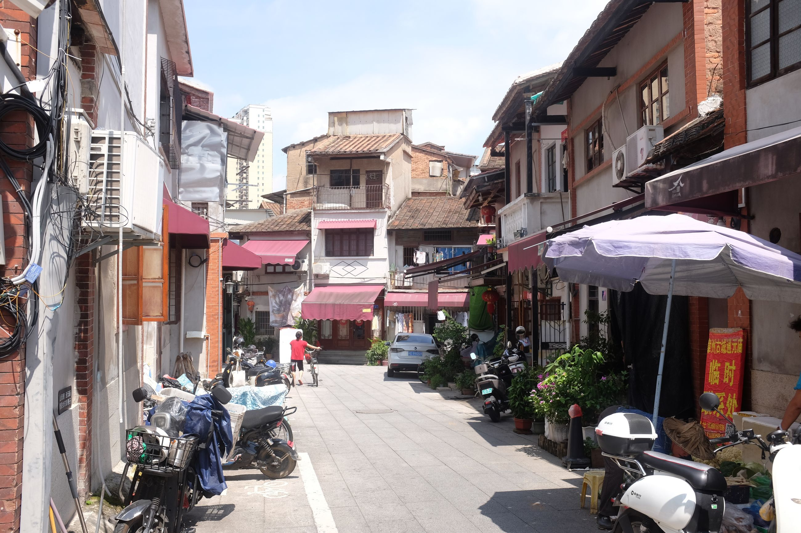
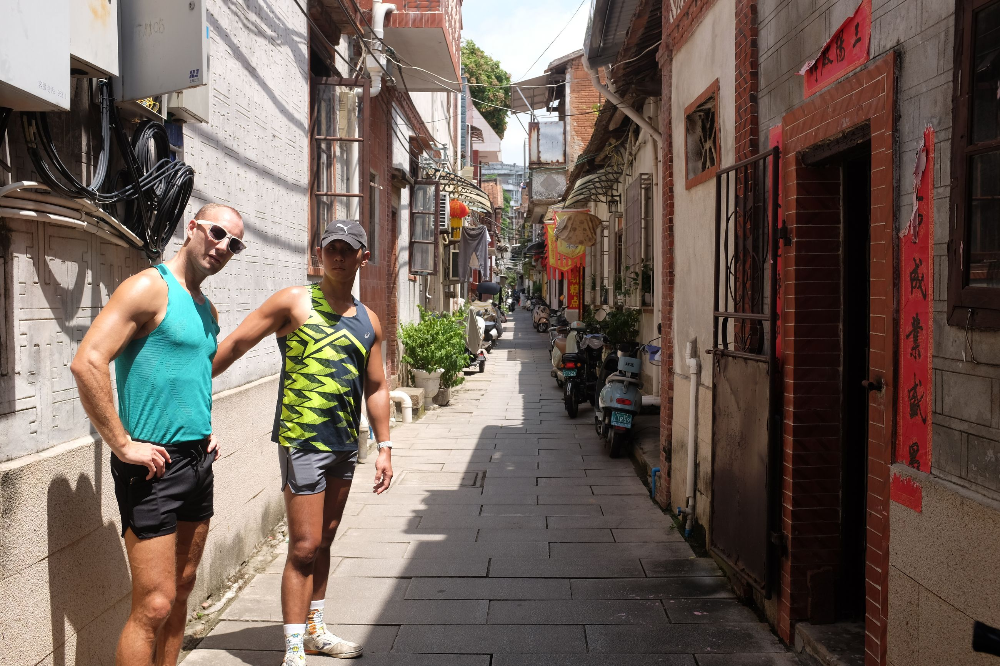
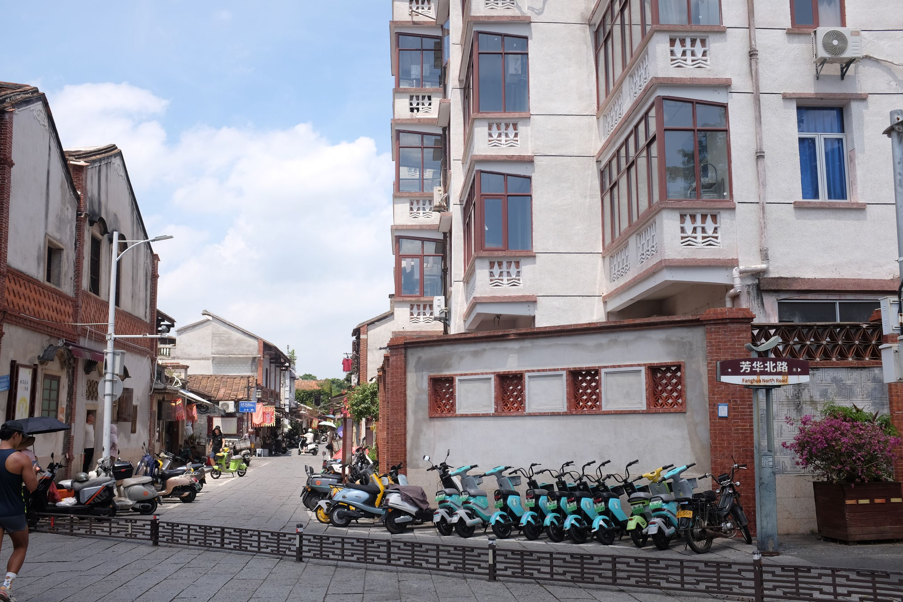
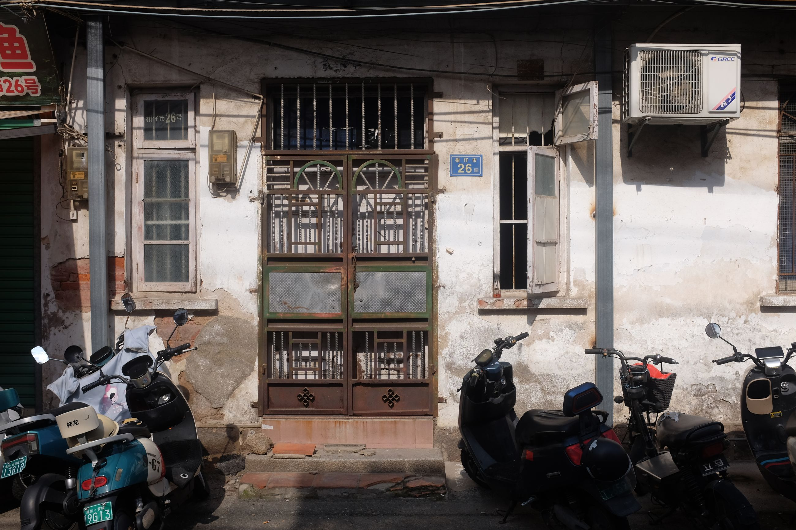
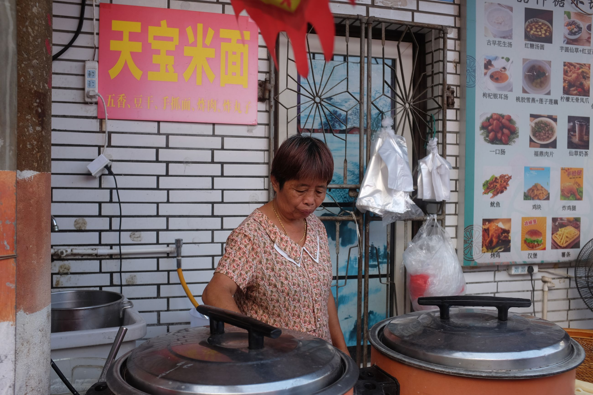
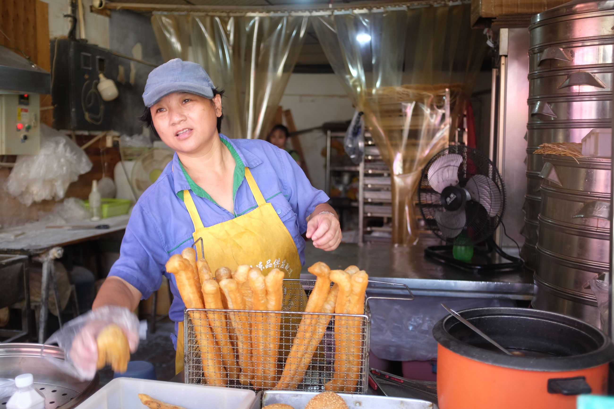
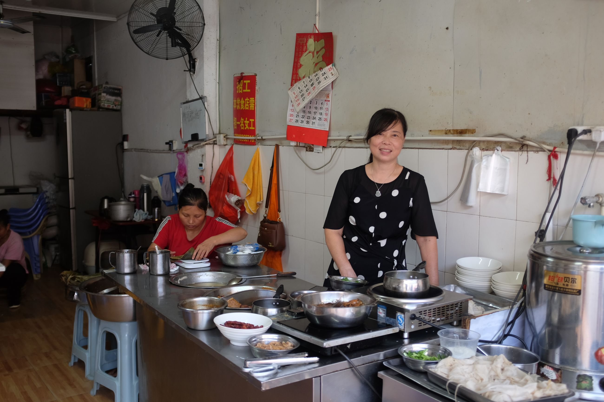
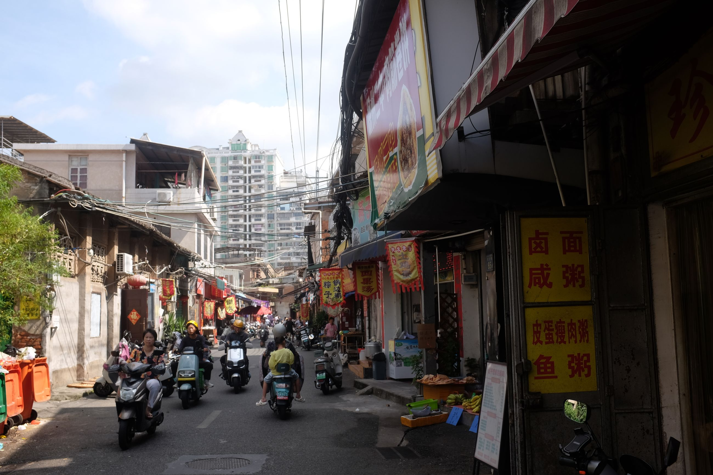
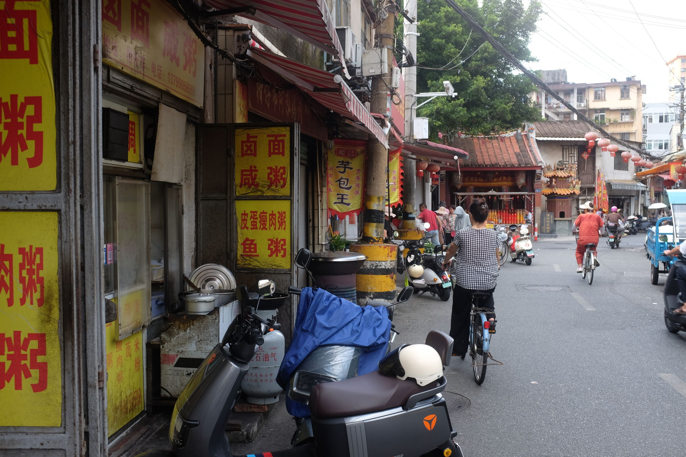
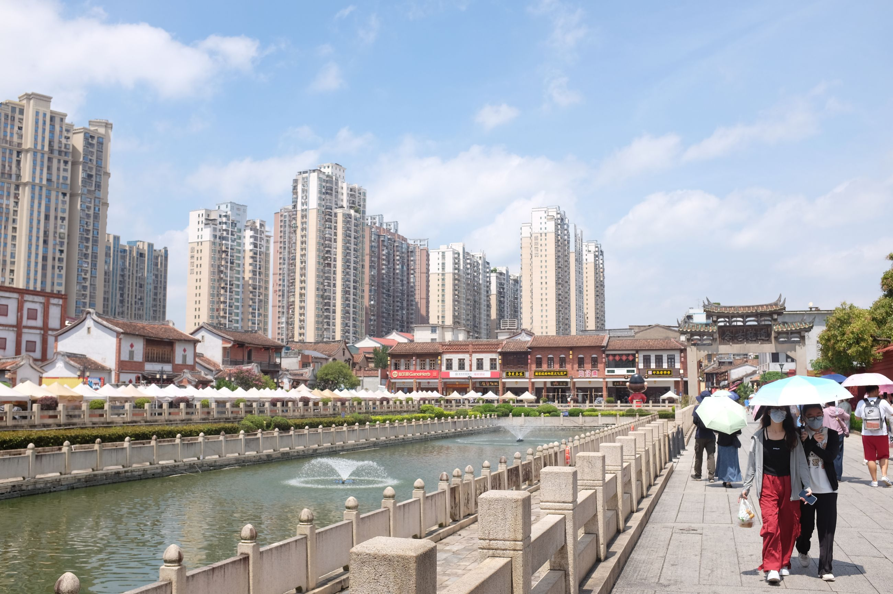

We ended our Tulou trip in the closest large city: Zhangzhou.
The only reason we went was because it was near the Tulous. It turns out, there's a lot more local charm.
There is an old town in Zhangzhou that has retained some apects of Hokkien culture. In the tiny alleys, you hear older folks speaking Minnan to each other, sipping on beer. Many tables feature a tea set where people gather, have tea and chat.
The small streets remind me of some places in Taiwan, which have similar low rise houses and window gratings. And some gentrification -- a healthy amount -- is starting to pop up in them, too. We have one cocktail at a bar at the historic Fanghua Lane (芳華里) called Puann-Kinn (半見), which is written in Peh-oe-ji, one of the official Latin-based alphabets for Hokkien.
  
We are able to catch breakfast at Ganzai Market, which was a small, self-assembled walking tour with some local foods. The locals are friendly and share how their food is made, some shops having been in operation for over 50 years (long, considering modern Chinese history). We then grab a coffee at a small cafe with hipster decoration at Ganzai Market (柑仔市) called Fanqie.
      
Overall, an odd gem of a city that has further enveloped us into the charm of all the treasures that China's development has brought.